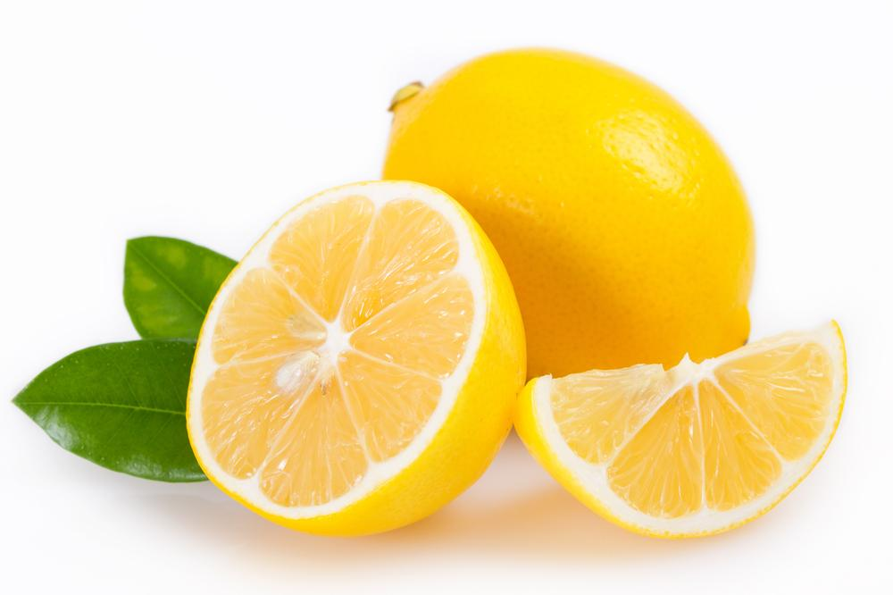
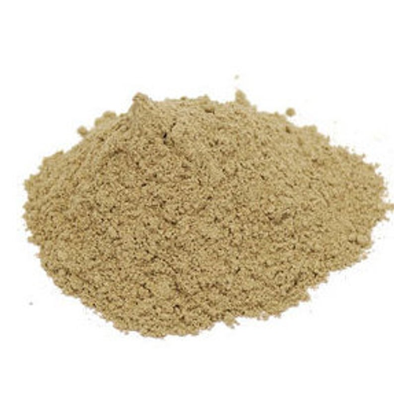
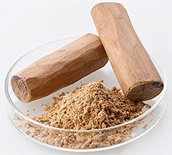

Some people face problems on account of an uneven skin complexion while some are continually wishing to get fairer skin. It is almost a fad, with people wanting to alter their skin tones into lighter shades. There are numerous skin whitening creams in the market, widely marketed for their effects on the skin’s tone and texture. Most celebrities have, at least once in their lives, endorsed such creams. In reality, these creams are nothing more than a dip made from chemicals that bleach your skin and damage the outer layer of your dermis. It is best that you avoid such products, especially those claiming to give results overnight, for they might trigger side-effects such as acne breakouts, dullness, and an uneven skin tone. Some women regularly pay visits to parlours and spas to get and to maintain paler skin tones. Such maintenance, although effective to a certain extent, is also pretty expensive.
A safe and affordable alternative for skin whitening is through the use of home remedies, using natural ingredients. Though these remedies only work to some extent to enhance your natural skin colour, they are still a much better choice than bleaching. They are mild on the skin and give you not exact but certainly incredible results, and they are extremely safe for your skin as well. Before starting a home remedy routine, it is important to understand the causes of skin darkening and how they can be prevented
While eating an orange is good for your health, making a paste from its peel is excellent for your skin. Make a paste using the peel of an orange and honey and apply it all over your face. It works best for oily and acne prone skin as honey has antibacterial properties that protect the skin while the orange peel has natural acids which help in combating skin pigmentation. It brightens your skin tone by several shades. It is also rich in vitamin C, which acts as a good depigmenting agent. It can even be used to treat blackheads, whiteheads, dead cells, acne and blemishes. Add milk or coconut oil to this mixture to get that extra glow.
Papaya is the ultimate skin-whitening agent. You can eat it regularly for a healthy gut. Or you could make a mask out of papaya and oatmeal to enrich your skin. Applying such a mixture gives you a lighter complexion and adds a glow to your skin. It also helps in reducing those nasty under eye circles. The oatmeal in the mixture acts as a gentle exfoliant while improving your skin’s health by efficiently removing dead cells from the top layers of your skin and unclogging the pores, thereby preventing the formation of acne as well. Ripe papaya pulp can also be mixed with grated apple, watermelon, pineapple and so on for added benefits while papaya and cucumber are an excellent combination for helping to remove a tan.
Water loss from the skin is more potent at night than during the day, so it’s best to rejuvenate, replenish and restore your body’s water levels in the evening. Lemon is a quick and effective solution to all your beauty woes. From its peel to its juice, everything in lemon has nutritional value. Being rich in Vitamin C, healthy-looking and fair skin is just one of the benefits that lemons have to offer. Its antibacterial and anti-fungal properties make lemon a natural treatment for reducing blackheads. Lemon juice works as an exfoliant and removes the dead skin cells, resulting in softer and smoother skin. You can either scrub the lemon peel or apply lemon juice on your skin to whiten it overnight, as a result of its ability to reduce the production of melanin.

You probably saw this one coming already. It’s a traditional and natural method, perhaps the most common one in Indian households, to whiten your complexion without the use of any chemicals. Turmeric has skin-whitening properties, provides essential nutrients to the skin and cleanses it, making your skin healthier and lighter after only a few applications. This is the reason that brides and grooms are literally coated in copious amounts turmeric paste before their wedding day. A mixture of yoghurt, gram flour and turmeric is everything your skin could have ever asked for. Yoghurt has probiotic bacteria which improves the texture of your skin while giving it a natural glow. It revitalizes and moisturizes the skin, reviving it in the process and giving it that fresh look. Gram flour, on the other hand, has antibacterial properties which helps it protect the skin from infections.

Pumpkin is full of anti-oxidising agents and exfoliating acids. It consists of many vitamins, from A to C and beta-carotene, which help in lightening and brightening the skin. Rice flour lightens your complexion and also keeps blackheads at bay. It very efficiently removes the excess oils, leaving behind just enough to keep the skin moist. It also has anti-bacterial and anti-ageing properties. The coarseness of the rice flour helps remove all the dead skin cells and impurities that have accumulated on the skin. To increase the consistency of this mask, you may add a few drops of organic coconut oil to it. This will give you the added benefit of a supple, glowing skin
Fuller's earth is any clay material with the capability to decolourize oil or other liquids, without chemical treatment. It has had extensive uses in the beauty industry, both as a cosmetic product and as a treatment for acne and other skin problems. Applying a mixture of fuller's earth and rose water on your skin will make it thank you a hundred times over. De-gunk your skin’s pores with this natural clay mask. It draws the dirt and the impurities out from your skin and leaves the skin looking clear and smooth.
Sandalwood is extremely rich in antioxidants and helps in preventing wrinkles. It also fights the damage caused by free radicals to your skin. It has been used as a face whitening agent by women across the Asian peninsula for centuries. Sandalwood is one of those natural ingredients which have their roots fastened in the secret masks used by queens and kings of ancient times. It is a principal ingredient in many facial packs and creams. The purer, more natural forms of sandalwood powder you use the better are the results. It even works wonders to remedy a patchy, uneven skin tone. Its paste has a pearlescent finish to it that brightens the skin and gives it an instant dewy look.